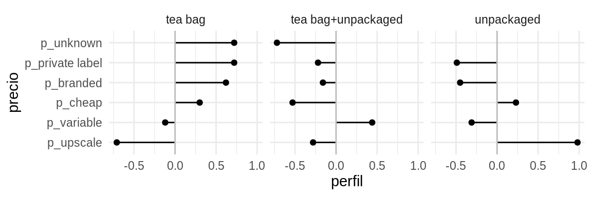

EXAMEN PARCIAL
Entrega: 7 de octubre antes de las 16:00 horas, por correo electrónico.
Instrucciones:
Resuelve todas las preguntas, tus respuestas deben ser claras y debes explicar los resultados, incluye también tus procedimientos/código de manera ordenada, el código comentado.
Se evaluará la presentación de resultados (calidad de las gráficas, tablas, …), revisa la sección de teoría de visualización en las notas.
Se puede realizar individual o en parejas, en el caso de parejas envíen una sola respuesta con el nombre de ambos.
Si tienes preguntas puedes escribirlas en este documento, será el único medio para resolver dudas del examen (no correos).
El examen se puede entregar después de la fecha establecida, sin embargo habrá una penalización de un punto (sobre 10) por cada día tarde.
1. Tablas de conteos y bootstrap
En la sección de visualización vimos un ejemplo de tabla de perfiles (ver sub-sección de tinta de datos).
En este ejercicio construiremos intervalos de confianza para una tabla de perfiles usando bootstrap. Usaremos los datos de tomadores de te (del paquete Lê, Josse, and Husson (2008)):
Nos interesa ver qué personas compran té suelto (unpacked), y de qué tipo
(Tea). Empezamos por ver las proporciones que compran té según su empaque (en
bolsita o suelto):
| how | n | % |
|---|---|---|
| tea bag | 170 | 57 |
| tea bag+unpackaged | 94 | 31 |
| unpackaged | 36 | 12 |
La tabla de arriba es poco informativa, buscamos comparar grupos, por ejemplo,
queremos investigar si hay diferencias en los patrones de compra (en términos de
precio o marca) dependiendo del tipo de té que consumen. En la siguiente tabla
leemos, por ejemplo, que de los compradores de te suelto (unpackaged) el 56%
de las compras corresponden a té fino (upscale).
| price | tea bag | tea bag+unpackaged | unpackaged |
|---|---|---|---|
| p_branded | 41 | 21 | 14 |
| p_cheap | 3 | 1 | 3 |
| p_private label | 9 | 4 | 3 |
| p_unknown | 6 | 1 | 0 |
| p_upscale | 8 | 20 | 56 |
| p_variable | 32 | 52 | 25 |
Para facilitar la comparación podemos calcular perfiles columna. Comparamos cada una de las columnas con la columna marginal (la tabla de tipo de estilo de té):
| price | tea bag | tea bag+unpackaged | unpackaged | promedio |
|---|---|---|---|---|
| p_private label | 0.72 | -0.22 | -0.49 | 5 |
| p_unknown | 0.72 | -0.72 | -1 | 4 |
| p_branded | 0.62 | -0.16 | -0.45 | 25 |
| p_cheap | 0.3 | -0.53 | 0.23 | 2 |
| p_variable | -0.12 | 0.44 | -0.31 | 36 |
| p_upscale | -0.71 | -0.28 | 0.98 | 28 |
Leemos esta tabla como sigue: por ejemplo, los compradores de té suelto
(unpacked) compran té fino (upscale) a una tasa casi el doble (0.98) que el
promedio.
También podemos graficar como:

Observación: hay dos maneras de construir la columna promedio: tomando los porcentajes sobre todos los datos, o promediando los porcentajes de las columnas como en este ejemplo.
Utiliza bootstrap para crear intervalos de confianza sobre los perfiles de la última tabla.
Modifica la última gráfica para representar los intervalos de confianza.
Comenta tus observaciones.
2. Cuantificando el error Monte Carlo
Recordemos que ante la pregunta ¿cuántas muestras bootstrap se necesitan? el error que podemos disminuir al aumentar el número de replicaciones es el error de Monte Carlo, y una manera de cuantificarlo es haciendo bootstrap del bootstrap.
Retomemos el ejemplo de la media de las calificaciones de ENLACE de español 3o de primaria en el estado de México. Nos interesa la media de las calificaciones y usaremos el estimador plug-in.
library(estcomp)
# universo
enlace <- enlacep_2013 %>%
janitor::clean_names() %>%
mutate(id = 1:n()) %>%
select(id, cve_ent, turno, tipo, esp_3 = punt_esp_3, esp_6 = punt_esp_6,
n_eval_3 = alum_eval_3, n_eval_6 = alum_eval_6) %>%
na.omit() %>%
filter(esp_3 > 0, esp_6 > 0, n_eval_3 > 0, n_eval_6 > 0, cve_ent == "15")
set.seed(16021)
n <- 300
# muestra
enlace_muestra <- sample_n(enlace, n) %>%
mutate(clase = "muestra")Crea un intervalo del 90% para \(\hat{\theta}\) usando los percentiles de la distribución bootstrap, y \(B=100\) replicaciones.
- Podemos estimar el error estándar de Monte Carlo de los extremos de los intervalos (percentiles 0.05 y 0.95) haciendo bootstrap de la distribución bootstrap:
- Selecciona muestras con reemplazo de tamaño \(B\) de la distribución bootstrap,
- Calcula los percentiles de interés (0.05 y 0.95),
- Calcula la desviación estándar de los percentiles (una para cada extremo), esta será tu aproximación al error de Monte Carlo
- Calcula los percentiles de interés (0.05 y 0.95),
- ¿Cuál es el error estándar de Monte Carlo con \(B = 100, 1000, 10000\) replicaciones para cada extremo del intervalo de percentiles?
3. Cobertura de intervalos de confianza
En este problema realizarás un ejercicio de simulación para comparar la
exactitud de distintos intervalos de confianza. Simularás muestras de
una distribución Poisson con parámetro \(\lambda=2.5\) y el estadístico de interés
es \(\theta=exp(-2\lambda)\).
Sigue el siguiente proceso:
Genera una muestra aleatoria de tamaño \(n=60\) con distribución \(Poisson(\lambda)\), parámetro \(\lambda=2.5\) (en R usa la función
rpois()).Genera \(10,000\) muestras bootstrap y calcula intervalos de confianza del 95% para \(\hat{\theta}\) usando 1) el método normal, 2) percentiles y 3) \(BC_a\).
Revisa si el intervalo de confianza contiene el verdadero valor del parámetro (\(\theta=exp(-2\cdot2.5)\)), en caso de que no lo contenga registra si falló por la izquierda (el límite inferior \(exp(-2.5*\lambda)\)) o falló por la derecha (el límite superior \(exp(-2.5*\lambda)\)).
- Repite el proceso descrito 1000 veces y llena la siguiente tabla:
| Método | % fallo izquierda | % fallo derecha | Cobertura | Longitud promedio |
|---|---|---|---|---|
| Normal | ||||
| Percentiles | ||||
| BC_a |
La columna cobertura es una estimación de la cobertura del intervalo basada en las simulaciones, para calcularla simplemente escribe el porcentaje de los intervalos que incluyeron el verdadero valor del parámetro. La longitud promedio es la longitud promedio de los intervalos de confianza bajo cada método.
Realiza una gráfica de páneles, en cada panel mostrarás los resultados de uno de los métodos (normal, percentiles y BC_a), en el vertical graficarás los límites de los intervalos.
Repite los incisos a) y b) seleccionando muestras de tamaño \(300\).
Nota: Un ejemplo en donde la cantidad \(P(X=0)^2 = e^{-\lambda}\) es de interés es como sigue, las llamadas telefónicas a un conmutador se modelan con un proceso Poisson y \(\lambda\) es el número promedio de llamadas por minuto, entonce \(e^{- \lambda}\) es la probabilidad de que no se reciban llamadas en \(1\) minuto.
4. Cobertura en la práctica
En el caso del conteo rápido es posible evaluar la cobertura del intervalo de
confianza bootstrap (tarea 5) usando los resultados de elecciones pasadas, para
ello usaremos los resultados de las elecciones 2006 (datos election_2006 del
paquete estcomp) repetirás los siguientes dos pasos 100 veces (asegurate de
que tu ejercicio de simulación sea replicable):
Selecciona una muestra estratificada de
election_2006usando los tamaños de muestra que indica la tablastrata_sample_2006(dondenera el tamaño de muestra por estrato yNes el número de casillas en el mismo).Utiliza estimador de razón y bootstrap para construir intervalos de confianza para todos los candidatos.
Evalúa la cobertura del intervalo para cada candidato a lo largo de las 100 muestras, presenta los resultados en una tabla que incluya la longitud media de los intervalos y la cobertura observada.
Opicional (punto extra): Las muestras con las que se estima en el conteo
rápido nunca llegan completas, y los faltantes suelen presentar patrones, por
ejemplo, las casillas en las zonas rurales tienen mayor probabilidad de no
llegar. Repite el ejercicio de simulación de arriba añadiendo un paso de
casillas faltantes, lo que debes hacer es que una vez simulada una muestra
completa cada casilla se censura de acuerdo a cierta probabilidad (tu la
eliges como desees), y esta probabilidad puede depender, por ejemplo, de si la
casilla es rural o urbana o quizá puede variar por estado. Elige uno (o más)
procedimiento(s) de censura de casillas y evalúa la cobertura de los intervalos
en este(os) escenario(s). Puedes explorar las variables disponibles viendo la
documentación de los datos (?election_2006).
5. Simulación de variables aleatorias
Recuerda que una variable aleatoria \(X\) tiene una distribución geométrica con parámetro \(p\) si \[p_X(i) = P(X=i)=pq^{i-1}\] para \(i=1,2,...\) y donde \(q=1-p\).
Notemos que \[\sum_{i=1}^{j-1}P(X=i)=1-P(X\geq j-1)\] \[=1 - q^{j-1}\] para \(j\geq 1\). por lo que podemos generar un valor de \(X\) generando un número aleatorio \(U\) y seleccionando \(j\) tal que \[1-q^{j-1} \leq U \leq 1-q^j\]
Esto es, podemos definir \(X\) como: \[X=min\{j : (1-p)^j < 1-U\}\] usando que el logaritmo es una función monótona (i.e. \(a<b\) implica \(log(a)<log(b)\)) obtenemos que podemos expresar \(X\) como \[X=min\big\{j : j \cdot log(q) < log(1-U)\big\}\] \[=min\big\{j : j > log(U)/log(q)\big\}\] entonces \[X= int\bigg(\frac{log(U)}{log(q)}\bigg)+1\]
es geométrica con parámetro \(p\).
Ahora, sea \(X\) el número de lanzamientos de una moneda que se requieren para alcanzar \(r\) éxitos (soles) cuando cada lanzamiento es independiente, \(X\) tiene una distribución binomial negativa.
Una variable aleatoria \(X\) tiene distribución binomial negativa con parámetros \((r,p)\) donde \(r\) es un entero positivo y \(0<p<r\) si \[P(X=j)=\frac{(j-1)!}{(j-r)!(r-1)!}p^r(1-p)^{j-r}.\]
Recuerda la distribución geométrica ¿cuál es a relación entre la variable aleatoria binomial negativa y la geométrica?
Utiliza el procedimiento descrito para generar observaciones de una variable aleatoria con distribución geométrica y la relación entre la geométrica y la binomial negativa para generar simulaciones de una variable aleatoria con distribución binomial negativa (parámetro p = 0.7, r = 20). Utiliza la semilla 341285 y reporta las primeras 10 simulaciones obtenidas.
Verifica la relación \[p_{j+1}=\frac{j(1-p)}{j+1-r}p_j\]
y úsala para generar un nuevo algoritmo de simulación, vuelve a definir la semilla y reporta las primeras 10 simulaciones.
\[ \frac{p_{j +1}}{p_j} = \frac{\frac{j!}{(j+1-r)!(r-1)!}p^r(1-p)^{j+1-r}}{\frac{(j-1)!}{(j-r)!(r-1)!}p^r(1-p)^{j-r}}= \frac{j(1 - p) }{j + 1 - r}.\]
Realiza 10,000 simulaciones usando cada uno de los algoritmos y compara el tiempo de ejecución (puedes usar la función
system.time(), explicada en la sección de rendimiento en R).Genera un histogrma para cada algoritmo (usa 1000 simulaciones) y comparalo con la distribución construida usando la función de R dnbinom.
No he dado ni recibido ayuda no autorizada en la realización de este exámen.
Firma
Referencias
Lê, Sébastien, Julie Josse, and François Husson. 2008. “FactoMineR: A Package for Multivariate Analysis.” Journal of Statistical Software 25 (1):1–18. https://doi.org/10.18637/jss.v025.i01.